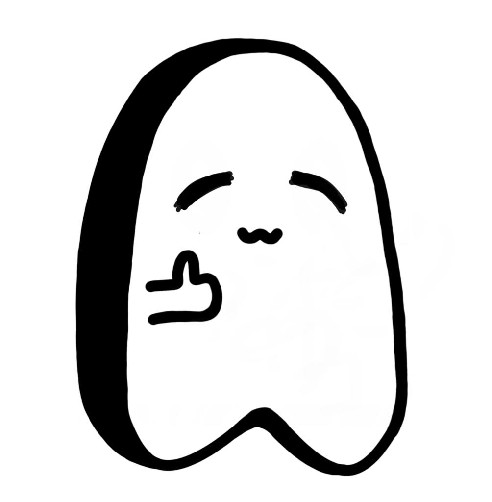

Katakana / カタカナ
El silabario katakana se usa para los préstamos lingüísticos extranjeros, las onomatopeyas y las interjecciones. Sus caracteres no tienen valor conceptual alguno, sino únicamente fonético. Gráficamente son de forma angulosa y geométrica. El silabario katakana consta de 46 caracteres, que representan sílabas compuestas por una consonante y una vocal, o bien una sola vocal. De las consonantes, únicamente la 'n' puede ir sola.
| Carácteres Básicos | ||||||||||||
|---|---|---|---|---|---|---|---|---|---|---|---|---|
| a | i | u | e | o | ||||||||
| ア | イ | ウ | エ | オ | Consonante Sonora | |||||||
| ka | ki | ku | ke | ko | ga | gi | gu | ge | go | |||
| カ | キ | ク | ケ | コ | ガ | ギ | グ | ゲ | ゴ | |||
| sa | shi | su | se | so | za | ji (zi) | zu | ze | zo | |||
| サ | シ | ス | セ | ソ | ザ | ジ | ズ | ゼ | ゾ | |||
| ta | chi | tsu | te | to | da | ji (di) | zu (du) | de | do | |||
| タ | チ | ツ | テ | ト | ダ | ヂ | ヅ | デ | デ | |||
| na | ni | nu | ne | no | ||||||||
| ナ | ニ | ヌ | ネ | ノ | ||||||||
| ha | hi | hu | he | ho | ba | bi | bu | be | bo | |||
| ハ | ヒ | フ | へ | ホ | バ | ビ | ブ | べ | ボ | |||
| ma | mi | mu | me | mo | pa | pi | pu | pe | po | |||
| マ | マ | ム | メ | モ | ....... | パ | ピ | プ | ぺ | ポ | ||
| ya | yu | yo | ||||||||||
| ヤ | ユ | ヨ | ||||||||||
| ra | ri | ru | re | ro | ||||||||
| ラ | リ | ル | レ | ロ | ||||||||
| wa | wo | |||||||||||
| ワ | ヲ | |||||||||||
| n | ||||||||||||
| ン | ||||||||||||
| 2da Combinación. | ||||||
|---|---|---|---|---|---|---|
| Sonido Contraido | ||||||
| kya | kyu | kyo | ....... | gya | gyu | gyo |
| キャ | キュ | キョ | ギャ | ギュ | ギョ | |
| sha | shu | sho | ja | ju | jo | |
| シャ | シュ | ショ | ジャ | ジュ | ジョ | |
| cha | chu | cho | ||||
| チャ | チュ | チョ | ||||
| nya | nyu | nyo | ||||
| ニャ | ニュ | ニョ | ||||
| hya | hyu | hyo | bya | byu | byo | |
| ヒャ | ヒュ | ヒョ | ビャ | ビュ | ビョ | |
| mya | myu | myo | pya | pyu | pyo | |
| ミャ | ミュ | ミョ | ピャ | ピュ | ピョ | |
| rya | ryu | ryo | ||||
| リャ | リュ | リョ | ||||
No olvides ver el material de apoyo para que practiques tu escritura y estudies.
